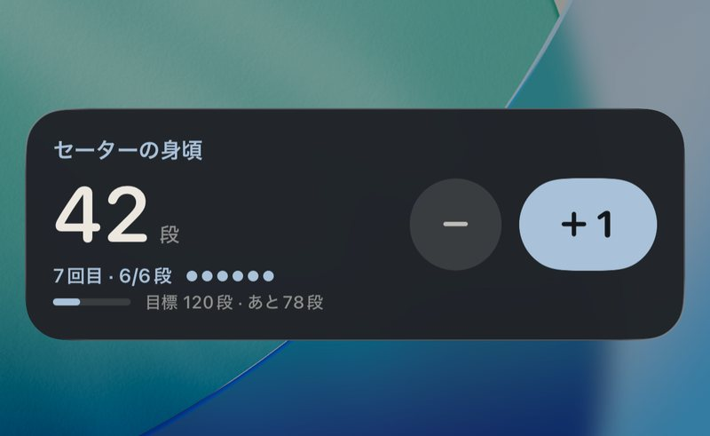
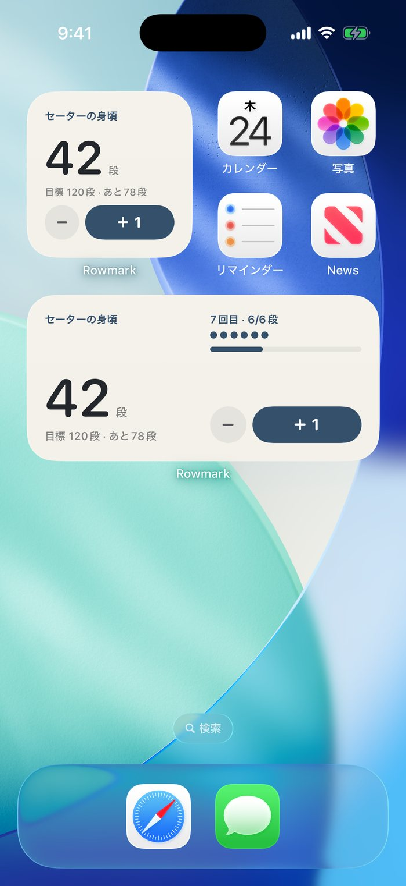
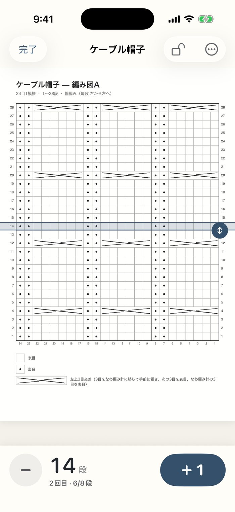
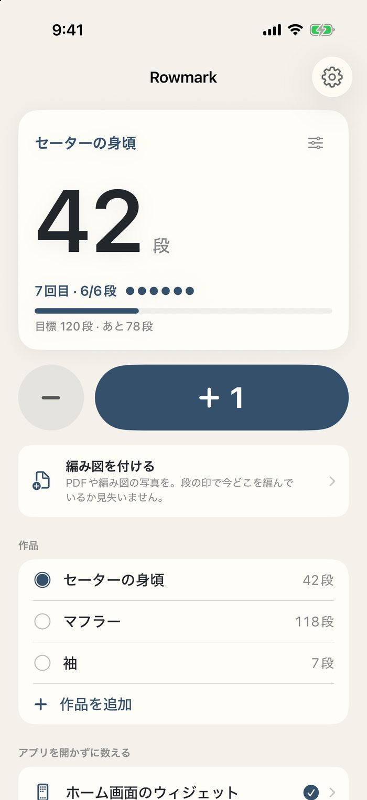

アプリを開かずに、ロック画面・ダイナミックアイランド・アクションボタンから数えられます。ホーム画面のウィジェットの＋1・−1は無料。
ロック画面のカウンターはPro ¥1,300・買い切り
アカウントも広告もサブスクもありません。あなたの作品と、いま何段目か、そして大きな＋1だけ。
Smallウィジェットは無料。＋1と−1を、アプリを開かずにそのまま押せます。ProのMedium・Largeウィジェットには、繰り返しの中の位置と目標までの進み具合も。

作品に編み図（PDFや紙の編み図の写真）を付けて、今の段に印を置いたまま数えられます。＋1で印も1段進みます。無料です。

作品は何個でも。目標段数（「あと78段」）と、繰り返し（「6段ごと」の中のいまの位置）を作品ごとに持てます。

広告なし・アカウント不要。
買い切り・サブスクなし。
ロック画面のカウンターは、iOSの仕様で1回につき最長8時間ほど表示されます。止まったらアプリから出し直してください。
使い方とよくある質問（全部）
どれも広告なし・サブスクなし。Proは買い切りです。
サブスクなし・広告なし・アカウント不要。